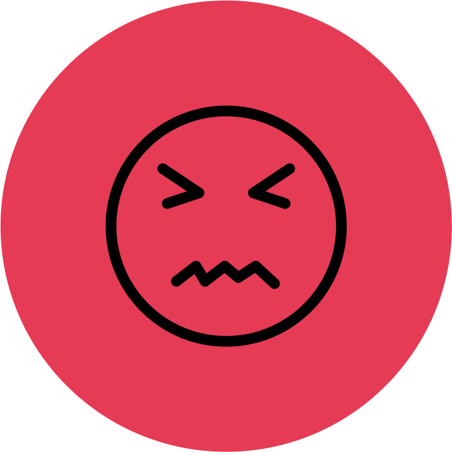
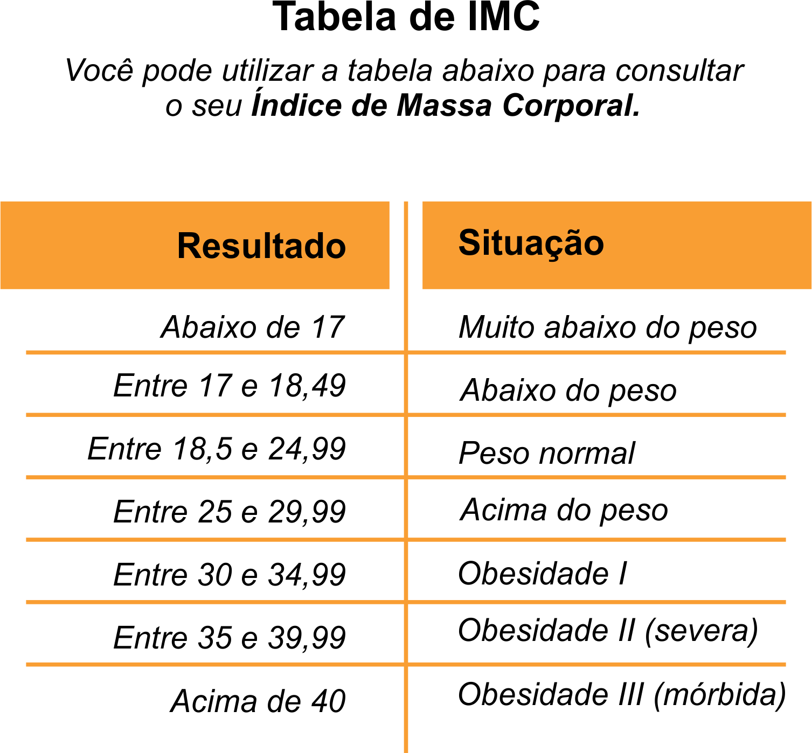

Classificação do IMC
Muito abaixo
do peso ideal
Classificação do IMC
Abaixo do
peso ideal
Classificação do IMC
Peso normal
Classificação do IMC
Acima do Peso
Classificação do IMC
Obesidade
grau I
Classificação do IMC
Obesidade
grau II
Classificação do IMC
Obesidade
grau III
Resultado
{{resultadoImc}}
